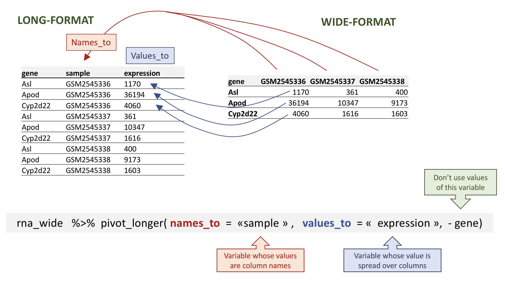

In the rna tibble, the rows contain expression values (the unit) that are associated with a combination of 2 other variables: gene and sample.
All the other columns correspond to variables describing either the sample (organism, age, sex, …) or the gene (gene_biotype, ENTREZ_ID, product, …). The variables that don’t change with genes or with samples will have the same value in all the rows.
This structure is called a long-format, as one column contains all the values, and other column(s) list(s) the context of the value.
In certain cases, the long-format is not really “human-readable”, and another format, a wide-format is preferred, as a more compact way of representing the data. This is typically the case with gene expression values that scientists are used to look as matrices, were rows represent genes and columns represent samples.
In this format, it would therefore become straightforward to explore the relationship between the gene expression levels within, and between, the samples.
To convert the gene expression values from rna into a wide-format, we need to create a new table where the values of the sample column would become the names of column variables.
The key point here is that we are still following a tidy data structure, but we have reshaped the data according to the observations of interest: expression levels per gene instead of recording them per gene and per sample.
The opposite transformation would be to transform column names into values of a new variable.
We can do both these of transformations with two tidyr functions, pivot_longer() and pivot_wider() (see here for details).
Pivoting the data into a wider format
Let’s select the first 3 columns of rna and use pivot_wider() to transform the data into a wide-format.
Note that by default, the pivot_wider() function will add NA for missing values.
Let’s imagine that for some reason, we had some missing expression values for some genes in certain samples. In the following fictive example, the gene Cyp2d22 has only one expression value, in GSM2545338 sample.
rna_with_missing_values
# A tibble: 7 × 3
gene sample expression
<chr> <chr> <dbl>
1 Asl GSM2545336 1170
2 Apod GSM2545336 36194
3 Asl GSM2545337 361
4 Apod GSM2545337 10347
5 Asl GSM2545338 400
6 Apod GSM2545338 9173
7 Cyp2d22 GSM2545338 1603
By default, the pivot_wider() function will add NA for missing values. This can be parameterised with the values_fill argument of the pivot_wider() function.
In the opposite situation we are using the column names and turning them into a pair of new variables. One variable represents the column names as values, and the other variable contains the values previously associated with the column names.
pivot_longer() takes four main arguments:
the data to be transformed;
the names_to: the new column name we wish to create and populate with the current column names;
the values_to: the new column name we wish to create and populate with current values;
the names of the columns to be used to populate the names_to and values_to variables (or to drop).

Long pivot of the rna data.
To recreate rna_long from rna_wide we would create a key called sample and value called expression and use all columns except gene for the key variable. Here we drop gene column with a minus sign.
Notice how the new variable names are to be quoted here.
# A tibble: 32,428 × 3
gene sample expression
<chr> <chr> <dbl>
1 Asl GSM2545336 1170
2 Asl GSM2545337 361
3 Asl GSM2545338 400
4 Asl GSM2545339 586
5 Asl GSM2545340 626
6 Asl GSM2545341 988
7 Asl GSM2545342 836
8 Asl GSM2545343 535
9 Asl GSM2545344 586
10 Asl GSM2545345 597
# ℹ 32,418 more rows
We could also have used a specification for what columns to include. This can be useful if you have a large number of identifying columns, and it’s easier to specify what to gather than what to leave alone. Here the starts_with() function can help to retrieve sample names without having to list them all! Another possibility would be to use the : operator!
# A tibble: 32,428 × 3
gene sample expression
<chr> <chr> <dbl>
1 Asl GSM2545336 1170
2 Asl GSM2545337 361
3 Asl GSM2545338 400
4 Asl GSM2545339 586
5 Asl GSM2545340 626
6 Asl GSM2545341 988
7 Asl GSM2545342 836
8 Asl GSM2545343 535
9 Asl GSM2545344 586
10 Asl GSM2545345 597
# ℹ 32,418 more rows
# A tibble: 32,428 × 3
gene sample expression
<chr> <chr> <dbl>
1 Asl GSM2545336 1170
2 Asl GSM2545337 361
3 Asl GSM2545338 400
4 Asl GSM2545339 586
5 Asl GSM2545340 626
6 Asl GSM2545341 988
7 Asl GSM2545342 836
8 Asl GSM2545343 535
9 Asl GSM2545344 586
10 Asl GSM2545345 597
# ℹ 32,418 more rows
Note that if we had missing values in the wide-format, the NA would be included in the new long format.
# A tibble: 9 × 3
gene sample expression
<chr> <chr> <dbl>
1 Asl GSM2545336 1170
2 Asl GSM2545337 361
3 Asl GSM2545338 400
4 Apod GSM2545336 36194
5 Apod GSM2545337 10347
6 Apod GSM2545338 9173
7 Cyp2d22 GSM2545336 NA
8 Cyp2d22 GSM2545337 NA
9 Cyp2d22 GSM2545338 1603
Pivoting to wider and longer formats can be a useful way to balance out a dataset so every replicate has the same composition.
Question
Starting from the rna table, use the pivot_wider() function to create a wide-format table giving the gene expression levels in each mouse. Then use the pivot_longer() function to restore a long-format table.
# A tibble: 32,428 × 3
gene mouse_id counts
<chr> <chr> <dbl>
1 Asl 14 1170
2 Asl 9 361
3 Asl 10 400
4 Asl 15 586
5 Asl 18 626
6 Asl 6 988
7 Asl 5 836
8 Asl 11 535
9 Asl 22 586
10 Asl 13 597
# ℹ 32,418 more rows
Question
Subset genes located on X and Y chromosomes from the rna data frame and spread the data frame with sex as columns, chromosome_name as rows, and the mean expression of genes located in each chromosome as the values, as in the following tibble:
You will need to summarise before reshaping!
Solution
Let’s first calculate the mean expression level of X and Y linked genes from male and female samples…
# A tibble: 4 × 3
chromosome_name gender mean
<chr> <chr> <dbl>
1 X Female 3504.
2 X Male 2497.
3 Y Female 3
4 Y Male 2117.
Question
Use the rna dataset to create an expression matrix where each row represents the mean expression levels of genes and columns represent the different timepoints.
Solution
Let’s first calculate the mean expression by gene and by time
Notice that this generates a tibble with some column names starting by a number. If we wanted to select the column corresponding to the timepoints, we could not use the column names directly… What happens when we select the column 4?
Use the previous data frame containing mean expression levels per timepoint and create a new column containing fold-changes between timepoint 8 and timepoint 0, and fold-changes between timepoint 8 and timepoint 4. Convert this table into a long-format table gathering the fold-changes calculated.
In many real life situations, data are spread across multiple tables. Usually this occurs because different types of information are collected from different sources.
It may be desirable for some analyses to combine data from two or more tables into a single data frame based on a column that would be common to all the tables.
The dplyr package provides a set of join functions for combining two data frames based on matches within specified columns. Here, we provide a short introduction to joins. The Data Transformation Cheat Sheet also provides a short overview on table joins.
We are going to illustrate join using a small table, rna_mini that we will create by subsetting the original rna table, keeping only 3 columns and 10 lines.
The second table, annot1, contains 2 columns, gene and gene_description.
annot1 <-read_csv(file ="data/annot1.csv")annot1
# A tibble: 10 × 2
gene gene_description
<chr> <chr>
1 Cyp2d22 cytochrome P450, family 2, subfamily d, polypeptide 22 [Source:MGI S…
2 Klk6 kallikrein related-peptidase 6 [Source:MGI Symbol;Acc:MGI:1343166]
3 Fcrls Fc receptor-like S, scavenger receptor [Source:MGI Symbol;Acc:MGI:19…
4 Plp1 proteolipid protein (myelin) 1 [Source:MGI Symbol;Acc:MGI:97623]
5 Exd2 exonuclease 3'-5' domain containing 2 [Source:MGI Symbol;Acc:MGI:192…
6 Apod apolipoprotein D [Source:MGI Symbol;Acc:MGI:88056]
7 Gnb4 guanine nucleotide binding protein (G protein), beta 4 [Source:MGI S…
8 Slc2a4 solute carrier family 2 (facilitated glucose transporter), member 4 …
9 Asl argininosuccinate lyase [Source:MGI Symbol;Acc:MGI:88084]
10 Gjc2 gap junction protein, gamma 2 [Source:MGI Symbol;Acc:MGI:2153060]
We now want to join these two tables into a single one containing all variables using the full_join() function from the dplyr package. The function will automatically find the common variable to match columns from the first and second table. In this case, gene is the common variable. Such variables are called keys. Keys are used to match observations across different tables.
In real life, gene annotations are sometimes labelled differently.
The annot2 table is exactly the same than annot1 except that the variable containing gene names is labelled differently.
annot2 <-read_csv(file ="data/annot2.csv")
In case none of the variable names match, we can set manually the variables to use for the matching. These variables can be set using the by argument, as shown below with rna_mini and annot2 tables.
full_join(rna_mini, annot2, by =c("gene"="external_gene_name"))
As can be seen above, the variable name of the first table is retained in the joined one.
Challenge:
Load in the file annot3.csv. Using the full_join() function, join tables rna_mini and annot3. What has happened for genes Klk6, mt-Tf, mt-Rnr1, mt-Tv, mt-Rnr2, and mt-Tl1 ?
Genes Klk6 is only present in rna_mini, while genes mt-Tf, mt-Rnr1, mt-Tv, mt-Rnr2, and mt-Tl1 are only present in annot3 table. Their respective values for the variables of the table have been encoded as missing.
Exporting data
Now that you have learned how to use dplyr to extract information from or summarise your raw data, you may want to export these new data sets to share them with your collaborators or for archival.
Similar to the read_csv() function used for reading CSV files into R, there is a write_csv() function that generates CSV files from data frames.
Before using write_csv(), we are going to create a new folder, data_output, in our working directory that will store this generated dataset. We don’t want to write generated datasets in the same directory as our raw data. It’s good practice to keep them separate. The data folder should only contain the raw, unaltered data, and should be left alone to make sure we don’t delete or modify it. In contrast, our script will generate the contents of the data_output directory, so even if the files it contains are deleted, we can always re-generate them.
Let’s use write_csv() to save the rna_wide table that we have created previously.
The materials in this lesson have been adapted from work created by the HBC and Data Carpentry, as well as materials created by Laurent Gatto, Charlotte Soneson, Jenny Drnevich, Robert Castelo, and Kevin Rue-Albert. These are open access materials distributed under the terms of the Creative Commons Attribution license (CC BY 4.0), which permits unrestricted use, distribution, and reproduction in any medium, provided the original author and source are credited.